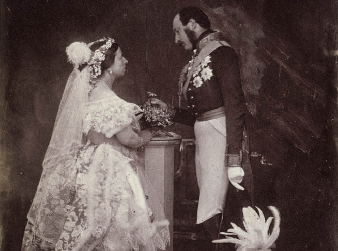

Бонсай является типированием взрослого или старого дерева в миниатюре с сохранением всей красоты определенного вида. Это древнее искусство зародилось свыше тысячи лет назад в Китае, совершенствовалось в Японии, а сейчас активно завоевывает Европу и Америку.
Именно миртовое дерево, символизирующее любовь, верность и в то же время мудрость и справедливость, с давних времен и по сей день используется для создания бонсай. Кроме того, в Европе из цветков часто составляют свадебные букеты.
Родина мирта точно не определена, но в природе он широко распространен на территории Африки и на юге Европы.